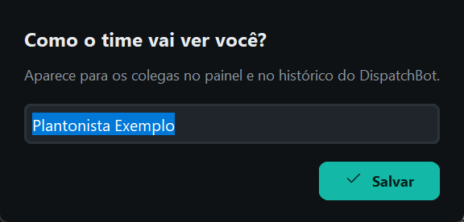
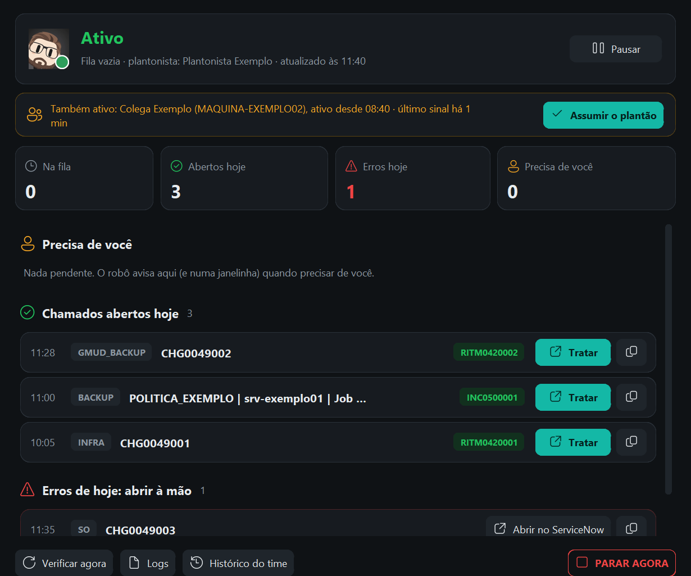
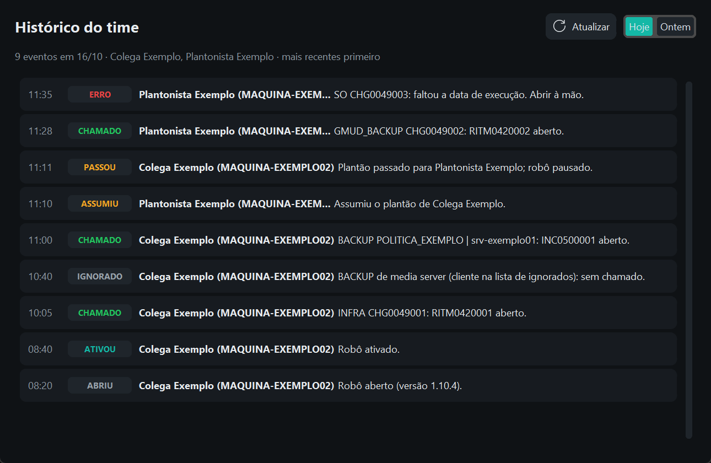
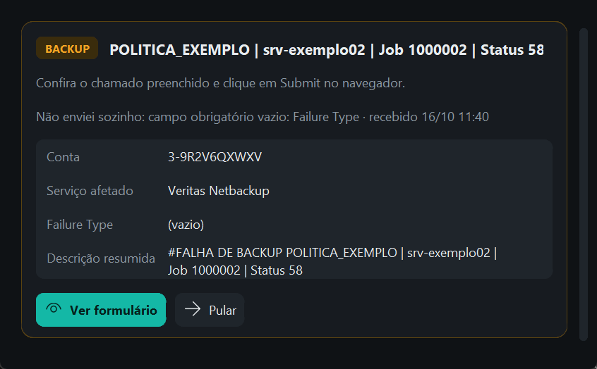

Um robô que roda no computador de quem está de plantão e abre no ServiceNow (Employee Center) os chamados dos alertas de GMUD e de Backup, sem ninguém precisar digitar.
| Alerta | Chamado aberto | Número que volta | Chat do Teams |
|---|---|---|---|
| GMUD INFRA | Formulário Hosting | RITM | (FC) NET / SOC |
| GMUD DBA | Formulário Hosting | RITM | (FC) BANCO DE DADOS |
| GMUD SO | Formulário Hosting | RITM | (FC) LINUX - WINDOWS - VMWARE |
| GMUD Backup | Formulário Hosting | RITM | (FC) NETBACKUP |
| Falha de Backup | Incidente (cartão Backup) | INC | (FC) NETBACKUP |
Se o RITM (GMUD) ou o INC (Backup) demorar a aparecer no ServiceNow, o robô usa o número do caso CS que o formulário cria: o chamado foi aberto do mesmo jeito.
Uma vez só, em cada computador de plantão. Não precisa de administrador. O instalador é enviado pelo time de RPA.

| O quê | Onde |
|---|---|
| Abrir o robô de novo | Menu Iniciar → DispatchBot |
| Trocar o seu nome | Botão direito no ícone → Meu nome no DispatchBot... |
| Desinstalar | Configurações → Aplicativos → DispatchBot → Desinstalar |
| Logs (para o time de RPA) | Botão direito no ícone → Abrir pasta de logs |
| Fila de alertas | Botão direito no ícone → Abrir pasta DispatchBot-Fila (abre a pasta no SharePoint, pelo navegador) |
| Configurações (só com o time de RPA) | Botão direito no ícone → Abrir config.json |
O ícone do DispatchBot fica na bandeja do Windows, ao lado do relógio (se não estiver visível, clique na setinha ^). A bolinha no canto mostra o que o robô está fazendo.
| Cor | O que significa | O que fazer | |
|---|---|---|---|
| Verde | Ligado e atendendo os alertas. | Nada. Siga o plantão normalmente. | |
| Azul | Preparando (abrindo o navegador, conectando na fila). | Esperar alguns segundos. | |
| Azul | Instável: o SharePoint da Microsoft ou a internet falhou por um momento. O robô tenta de novo sozinho. | Nada. Se passar de 5 min, o ícone fica vermelho: aí avise o time de RPA. | |
| Amarelo | Precisa de você: fazer login ou completar um chamado que o robô não enviou sozinho. | Olhe a janelinha "Precisa de você" (seção 5). | |
| Vermelho | Algo deu errado (ex.: sem internet, fila fora do ar) ou o robô foi parado em emergência (seção 8). | Abra o painel e veja o motivo. Se continuar, avise o time de RPA. | |
| Cinza | Pausado: não abre chamados. | Normal fora do seu plantão. |
| Item | Para que serve |
|---|---|
| PARAR AGORA (emergência) | Para o robô na hora (pede confirmação). Ao lado aparece o atalho de teclado que está valendo. Veja a seção 8. |
| Status e Versão | Só informação (não dá para clicar): o que o robô está fazendo e a versão instalada. |
| Abrir painel | O mesmo que clicar no ícone. |
| Verificar pendentes agora | Olha a fila na hora, sem esperar a próxima volta (ele já olha a cada 15 segundos). |
| Pausado | Marcado = robô parado neste computador. Desmarcado = ligado. |
| Enviar GMUD sem conferir | Marcado (padrão): o robô envia as GMUDs sozinho. Desmarque para conferir cada uma antes do Submit. |
| Enviar Backup sem conferir | O mesmo para o Backup: marcado (padrão), o robô envia sozinho. |
| Meu nome no DispatchBot... | Troca o nome que os colegas veem no painel e no histórico. |
| Abrir pasta DispatchBot-Fila · Abrir pasta de logs · Abrir config.json | Atalhos para o time de RPA (veja "Onde fica o quê", na seção 2). |
| Sair | Fecha o robô. Ele não volta sozinho até você abrir pelo menu Iniciar. |
Clique no ícone para abrir o painel. Fechar o painel não desliga o robô.

| Parte | O que mostra |
|---|---|
| Topo | O que o robô está fazendo agora (e qual alerta, se estiver atendendo um), quantos alertas há na fila, o nome do plantonista, a hora da última atualização e o botão Pausar / Retomar. |
| Também ativo | Só aparece quando o robô de outro colega também está ligado: mostra o nome, o computador, desde quando está ativo e o último sinal, com o botão Assumir o plantão (veja a seção 7). |
| Contadores | Na fila · Abertos hoje · Erros hoje · Precisa de você. |
| Precisa de você | O mesmo que a janelinha da seção 5: login, conferência e alertas antigos. |
| Chamados abertos hoje | Cada chamado com o número (RITM/INC, ou CS), o botão Tratar (abre o chamado no ServiceNow) e o ícone de copiar (copia o número). |
| Erros de hoje: abrir à mão | Alertas que o robô não conseguiu abrir, com o motivo, o botão Abrir no ServiceNow (abre o portal para você abrir à mão) o ícone de copiar (copia o alerta e o motivo) e Resolvido: use depois de abrir à mão, ou quando não há nada a abrir (ex.: alarme falso, texto ilegível). O erro sai da lista e, se era o último, o ícone sai do vermelho. |
| Rodapé | Verificar agora, Logs, Histórico do time e PARAR AGORA (pede confirmação). |
O botão Histórico do time, no rodapé do painel, mostra o que aconteceu hoje e ontem em todos os computadores: chamados abertos, erros, quem ligou, pausou ou assumiu o plantão e os alertas ignorados. Os mais recentes ficam em cima. No topo da tela dá para trocar entre Hoje e Ontem e clicar em Atualizar.

Uma janelinha escura aparece sozinha no canto inferior direito da tela, sempre por cima das outras. Com muitos itens, ela ganha uma barra de rolagem.

O robô pede confirmação, não envia aquele chamado e o Teams avisa para abrir à mão. Se for só um detalhe, você também pode corrigir o campo no formulário antes de enviar.
Quando um alerta chegou há mais de 2 horas (por exemplo, enquanto o robô estava pausado), o robô não abre sozinho: ele pergunta.
| Botão | Quando usar e o que acontece |
|---|---|
| Abrir chamado | Ninguém abriu ainda: o robô abre normalmente. |
| Já foi aberto | Alguém já abriu à mão: o alerta é arquivado, sem chamado e sem mensagem no Teams. |
| Depois | Não sabe agora: pergunta de novo em 30 minutos (os alertas novos seguem). |
Se a janelinha não conseguir abrir, o robô faz a mesma pergunta numa caixa do Windows: Sim = abrir chamado, Não = já foi aberto, Cancelar = depois.
O robô responde no mesmo chat em grupo onde aparece o card do alerta. São dois tipos de mensagem.
Clique no link para abrir o chamado direto no ServiceNow e tratar.
Abra o chamado como antes, pelo ServiceNow. O motivo também aparece no painel, em "Erros de hoje".
| Motivo | O que fazer |
|---|---|
| Faltou informação no alerta (CHG, data ou descrição) | Abrir à mão pelo e-mail original. |
| Texto ilegível no alerta (caracteres estranhos) | Abrir à mão pelo e-mail original. |
| O robô pediu conferência e ninguém enviou em 30 minutos | Abrir à mão ou verificar se já foi aberto. |
| Alerta pulado pelo plantonista | Abrir à mão com os dados corretos. |
| Login não concluído a tempo | Fazer o login e abrir à mão o alerta que ficou de fora. |
Só um computador fica com o robô ligado. Na troca:
Botão direito no ícone → marque Pausado. A bolinha fica cinza.
Botão direito no ícone → desmarque Pausado. A bolinha fica verde. Faça o login no ServiceNow se ele pedir.
Se o colega esqueceu o robô ligado, o seu painel mostra a faixa amarela "Também ativo: Fulano". Clique em Assumir o plantão e confirme: o robô do colega pausa sozinho (depois de terminar o alerta em andamento, nunca no meio) e o colega recebe um aviso de que você assumiu.
Enquanto isso, a faixa mostra "pedido enviado, esperando pausar". Quando o robô do colega pausar, você recebe a notificação "O plantão está com você". Se ele não responder em 12 minutos (computador desligado ou sem internet), o robô avisa: fale com o colega.
Se você clicar em Retomar (ou desmarcar Pausado) com outro robô ativo, o robô pergunta:
| Resposta | O que acontece |
|---|---|
| Sim | Você assume o plantão: o robô do colega pausa e o seu fica ativo. |
| Não | Ativa mesmo assim: os dois ficam ligados. |
| Cancelar | O seu continua pausado. |
Mesmo com dois robôs ligados, nenhum chamado sai em dobro.
Se o robô estiver abrindo chamados errados, pare na hora.
| Onde | Como | Alcance |
|---|---|---|
| Teclado | Ctrl + Alt + Shift + P, com qualquer janela aberta. Se outro programa já usar esse atalho, vale Ctrl + Alt + Shift + X ou Ctrl + Alt + Pause: o atalho que está valendo aparece ao lado de PARAR AGORA no menu do ícone. | Este computador |
| Ícone | Botão direito → PARAR AGORA → confirmar (ou o botão do painel) | Este computador |
| Pasta da fila | Criar um arquivo chamado PARAR na pasta DispatchBot-Fila (pode escrever o motivo dentro) | Todos os computadores |
Não. O robô nunca pede nem guarda senha. Ele só clica em "Use external login" e em "Submit"; a conta Microsoft e o Windows Hello são com você.
Pode. A janela do Edge do robô aparece quando ele preenche um chamado; deixe ela trabalhar. O seu navegador não é afetado.
Sem problema. Ele avisa, abre de novo sozinho e tenta outra vez. Nenhum chamado sai duplicado.
Faltou alguma informação no alerta (número da CHG, data de execução ou descrição). O robô não inventa: avisa no Teams com ⚠️ e o chamado deve ser aberto à mão.
Não. O robô lembra de cada alerta que já atendeu. Mesmo que o e-mail chegue repetido, só um chamado é aberto.
No chat do time no Teams (mensagem ✅ com o link) e no painel, em "Chamados abertos hoje", com os botões Tratar e Copiar.
Menu Iniciar → DispatchBot. Se você fechou pelo item Sair do menu, ele não abre sozinho: é de propósito.
Abra o painel e leia o motivo no topo. Se for uma parada de emergência ou remota, veja a seção 8. Normalmente é internet ou sessão expirada, e o robô tenta de novo sozinho. Se continuar vermelho por mais de alguns minutos, avise o time de RPA e abra os chamados à mão enquanto isso.
Se for de um dos clientes ignorados (appflexrj01-inst01, appnburj03 ou nbmasterbrarj01), é de propósito. Ela aparece como IGNORADO no histórico do time.
Ela volta quando surgir algo novo, e tudo continua disponível no painel (clique no ícone).
Botão direito no ícone → desmarque Enviar GMUD sem conferir ou Enviar Backup sem conferir. Para voltar ao envio sozinho, marque de novo (pede confirmação).